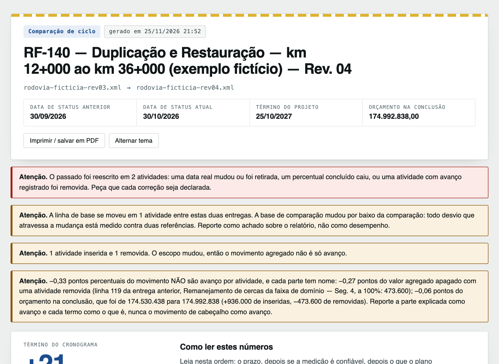
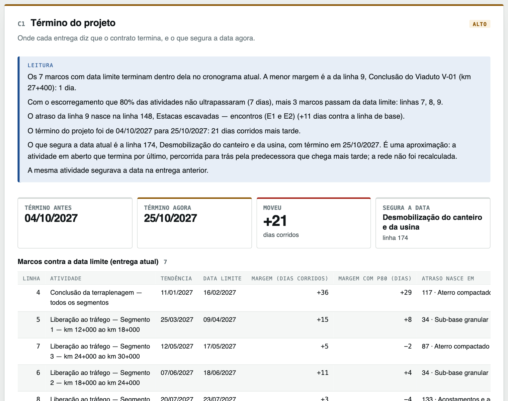
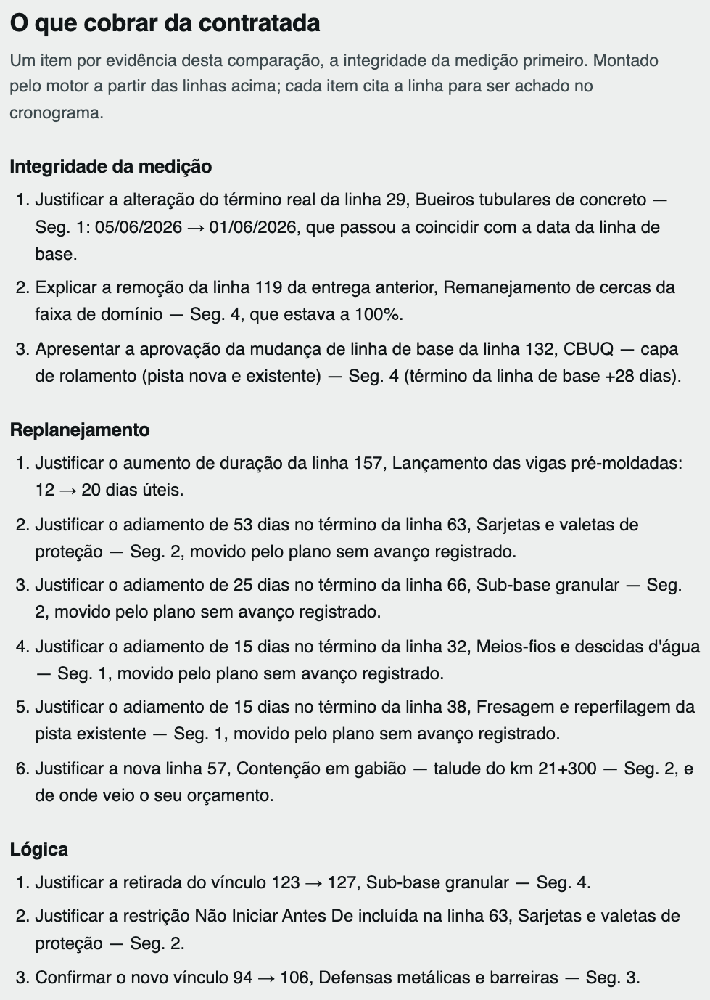
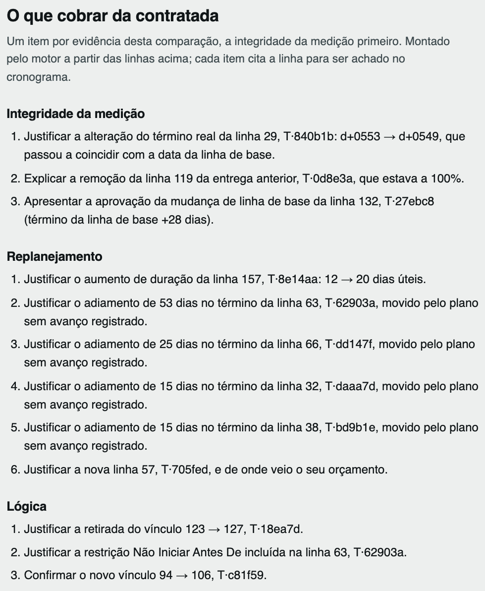

Guia ilustrado · versão 1.0.0
cronoaudit
A rev04 chegou. O número fecha. O que mais mudou?
Uma análise crítica de cronograma mostrada do começo ao fim, sobre uma rodovia inventada: o terminal, o relatório, a conversa com o agente e a lista do que cobrar.
01 · Por que existe
Ele abre, calcula e imprime. O número que sai é plausível, e é por isso que passa.
Quem recebe a revisão do mês confere o que dá para conferir a olho: a data final, o percentual, a curva. O que muda o resultado costuma estar em outro lugar. Uma data real corrigida depois do fato. Uma atividade concluída que sumiu. Uma linha de base que andou. Uma duração esticada em serviço que nem começou.
A cronoaudit é uma Agent Skill de código aberto que faz essa conferência. Um motor em Python lê o XML que o próprio MS Project exporta. Ele roda no seu computador e não usa a rede. No fim ele escreve um relatório que abre no navegador e, se você quiser, entrega os números medidos a um agente de IA para conversar sobre eles.
Este guia mostra a ferramenta trabalhando. Tudo aqui foi produzido sobre uma obra inventada, a rodovia fictícia RF-140, que vem junto com a instalação. Cada página pode ser repetida no seu computador.
Para quem planeja, para quem controla e para quem assina embaixo do relatório mensal.
O manual técnico explica cada conceito e cada cálculo. Este guia só mostra o que acontece quando você roda.
Saída do terminal ou tela do relatório, como o motor produziu. Os caminhos aparecem como ~. Todo corte de linhas é marcado.
Frase escrita pelo motor, por regra, copiada sem alteração. Os nomes de atividade vêm do arquivo de exemplo.
Conversa com agente montada para este guia. Os números dentro dela são os do motor, tirados das mesmas rodadas.
02 · O exemplo
A RF-140 é inventada: o trecho, o contratante, a contratada, as quantidades, os preços e as datas. O cronograma foi escrito para parecer uma obra rodoviária de verdade, quase toda saudável.
| Arquivo | Data de status | Papel |
|---|---|---|
| rodovia-ficticia-rev03.xml | 30/09/2026 | entrega anterior |
| rodovia-ficticia-rev04.xml | 30/10/2026 | entrega atual |
A obra tem quatro segmentos de 6 km e um viaduto no km 27+400. Cada segmento passa por terraplenagem, drenagem, pavimentação, sinalização e iluminação.
A rev03, sozinha, é limpa. A rev04 traz um mês de avanço real e catorze alterações plantadas de propósito. A lista está na página 15.
Avanço de 23,44% para 28,01%. Término do projeto em 25/10/2027. Todos os marcos dentro da data limite.
As três frases estão certas. Nenhuma delas conta o que foi alterado no cronograma para o número fechar.
O gerador do exemplo é determinístico e está em examples/make_exemplo.py. Cada problema plantado é declarado no topo do script.
03 · Instalar
O instalador copia a skill para as pastas que os agentes leem, traz o exemplo fictício e confere a própria instalação.
A captura ao lado foi feita a partir de uma cópia local do repositório, numa pasta de usuário vazia. Na instalação pública, a primeira linha é o comando da cola, na página 23, e o resto é igual.
CRONOAUDIT_EXAMPLE=1 bash install.sh --from .instalada em ~/.claude/skills/cronoauditinstalada em ~/.agents/skills/cronoauditexemplo fictício em ~/cronoaudit-exemploConferindo...Autoteste: tudo certo. report ~/cronoaudit-exemplo/rodovia-ficticia-rev04-review.html data ~/cronoaudit-exemplo/rodovia-ficticia-rev04-review.json report ~/cronoaudit-exemplo/rodovia-ficticia-rev03--to--rodovia-ficticia-rev04-cycle.html data ~/cronoaudit-exemplo/rodovia-ficticia-rev03--to--rodovia-ficticia-rev04-cycle.jsonO relatório do exemplo abriu no navegador. Ele também está em: ~/cronoaudit-exemplo/rodovia-ficticia-rev03--to--rodovia-ficticia-rev04-cycle.html Pronto: cronoaudit 1.0.0 instalada. Com um agente de IA (Claude Code, Copilot ou Codex): abra o agente na pasta do cronograma epeça, por exemplo, "analise o Rev04.xml". Se ele já estava aberto, feche e abra de novo. Sem agente, num terminal: python3 ~/.claude/skills/cronoaudit/scripts/review.py cronograma.xmlO cronograma vem do MS Project: Arquivo > Salvar como > Formato XML.Para ver o exemplo de novo: python3 ~/.claude/skills/cronoaudit/scripts/review.py --example Manual e ajuda: https://github.com/Holiv/cronoaudit
Uma para o Claude Code e outra para os agentes que leem ~/.agents, como o Codex e o GitHub Copilot. O motor é o mesmo nas duas.
Antes de dizer que terminou, o instalador roda o motor sobre o exemplo e confere o resultado.
Só Python 3.9 ou mais novo. Nenhuma biblioteca é instalada. No Windows, o instalador traz o Python se o computador não tiver.
CRONOAUDIT_EXAMPLE=1.| Qualquer cliente Agent Skills | npx skills add Holiv/cronoaudit -g |
| Claude Code, como plugin | /plugin marketplace add Holiv/cronoaudit |
| Uma equipe, pelo projeto | clonar o repositório em .agents/skills/cronoaudit |
04 · A entrega
A entrega anterior vem primeiro. O motor analisa a rev04 sozinha e depois compara as duas.
python3 ~/.claude/skills/cronoaudit/scripts/review.py rodovia-ficticia-rev03.xml rodovia-ficticia-rev04.xml --free --lang pt=== Análise da entrega atual === Análise crítica de cronograma -- rodovia-ficticia-rev04.xml⋯ 4 linhas cortadas ⋯Achados, na ordem em que o método os roda: A1 2 atividades Execução fora de sequência [como sucessoras 1, como predecessoras 1]⋯ 8 linhas cortadas ⋯Os achados de rede (A1, A2) condicionam todo o resto. Se não forem zero,toda data de tendência deste arquivo é calculada sobre lógica que a obra não segue.⋯ 2 linhas cortadas ⋯=== Comparação de ciclo === Comparação de ciclo anterior rodovia-ficticia-rev03.xml data de status 30/09/2026 atual rodovia-ficticia-rev04.xml data de status 30/10/2026 avanço 23,44% -> 28,01% movimento 4,57 pontos percentuais a decomposição soma 4,90 pontos resíduo não explicado -0,33 pontos datas que mudaram: 12 com realizado por trás -> execução 89 sem realizado -> replanejamento 1 com a LINHA DE BASE movida -> a referência mudou escopo: 1 inserida, 1 removida término do projeto: 04/10/2027 -> 25/10/2027 (21 dias corridos) caminho crítico: 0 entraram, 0 saíram, 71 perderam um dia de folga ou mais lógica: 1 vínculo incluído, 1 removido, 0 defasagens alteradas e 0 tipos alterados; restrições: 1 incluída, 0 alteradas, 0 removidas duração alterada em atividade não iniciada: 1 PASSADO REESCRITO: 0 inícios reais, 1 término real, 0 percentuais que caíram, 1 atividade com avanço removida⋯ 16 linhas cortadas ⋯ report ~/cronoaudit-exemplo/rodovia-ficticia-rev03--to--rodovia-ficticia-rev04-cycle.html data ~/cronoaudit-exemplo/rodovia-ficticia-rev03--to--rodovia-ficticia-rev04-cycle.json
A linha 36 começou com a predecessora, a linha 35, ainda aberta. O motor marca as duas pontas do vínculo, como o próprio MS Project faz.
O cabeçalho andou 4,57 pontos. O trabalho feito soma 4,90. A diferença não é avanço, e o motor dá nome a cada parte dela.
Um término real foi alterado e uma atividade com avanço sumiu. É o que o relatório vai mostrar antes de qualquer percentual.
05 · O relatório
É um arquivo HTML só, sem dependência. Abre igual num computador sem rede. Cada seção começa por uma leitura curta, escrita por regra.

O topo do relatório de comparação. Os quatro avisos aparecem antes do primeiro número.
O passado foi reescrito em 2 atividades: 0 inícios reais e 1 término real mudaram, 0 percentuais concluídos caíram e 1 atividade com avanço registrado foi removida.
Todo número que o ciclo anterior informou sobre essas atividades se apoiava num registro que não existe mais. Peça que cada correção seja declarada.
O avanço fica em quarto lugar de propósito. Um percentual só vale depois que se sabe se o registro por trás dele foi mexido.
Toda afirmação do relatório é marcada como medida, inferida ou relatada. Cada seção traz o critério usado e o caminho para reproduzir a conta no MS Project.
06 · Prazos
A tendência da rev04 respeita as sete datas limite futuras. A margem é que conta a história.
Desenhado a partir dos números do motor: tendência, data limite e margem em dias corridos de cada marco. P80 é o escorregamento que 80% das atividades já concluídas não ultrapassaram.
Os 7 marcos com data limite terminam dentro dela no cronograma atual. A menor margem é a da linha 9, Conclusão do Viaduto V-01 (km 27+400): 1 dia.
Com o escorregamento que 80% das atividades não ultrapassaram (7 dias), mais 3 marcos passam da data limite: linhas 7, 8, 9.
O atraso da linha 9 nasce na linha 148, Estacas escavadas — encontros (E1 e E2) (+11 dias contra a linha de base).
Um marco com um dia de margem não está no prazo. Ele está a um imprevisto de sair dele. O relatório põe essa margem na primeira tela e diz em que atividade o atraso nasce. Entre as duas entregas, a folga do marco do Segmento 3 caiu de 13 para 3 dias.
Não é previsão. É a distribuição do que já aconteceu nesta obra, aplicada às datas que faltam. Serve para ordenar a atenção.

A mesma seção no relatório: o término antes e agora, e a tabela de marcos contra a data limite.
07 · Integridade da medição
Data real é registro. Percentual é medição já informada. Linha de base é a régua. Quando um deles aparece diferente de um mês para o outro, o número do mês anterior perdeu o chão.
Nenhum dos três casos gera erro no MS Project. O arquivo abre, a curva fecha e o percentual sobe. Só a comparação entre as duas entregas mostra o que foi editado.
Ele não diz que houve má-fé. Uma correção pode ser legítima. Ele diz que a correção existe, onde está, e pede que seja declarada.
08 · Replanejamento e lógica
Das datas que mudaram, 12 têm execução por trás e 89 não têm nenhuma. As cinco edições abaixo são do segundo tipo: plano reescrito, sem obra por trás.
1 vínculo incluído, 1 removido, 0 com a latência alterada e 0 com o tipo alterado, entre atividades presentes nas duas entregas.
Restrições em atividades não concluídas: 1 incluída, 0 alteradas e 0 removidas.
71 atividades não concluídas perderam um dia útil de folga ou mais; a maior perda é de 25,0 dias, na linha 63.
A linha 63 recebeu uma restrição de data e ficou parada até 28/12/2026. Ela não está no caminho crítico, mas perdeu 25 dias úteis de folga, a maior perda do ciclo.
09 · Avanço
A diferença é pequena e tem nome. É o tipo de número que some dentro de um percentual agregado.
Desenhado a partir dos números do motor. A curva usa o custo de linha de base e o percentual físico que o próprio arquivo distribui no tempo.
O avanço ponderado foi de 23,44% para 28,01%: 4,57 pontos. O avanço por atividade soma 4,90, mais que o movimento: 0,33 pontos foram retirados por algo que não é trabalho feito.
A diferença tem nome: −0,27 pontos do valor agregado apagado com uma atividade removida (linha 119 da entrega anterior, Remanejamento de cercas da faixa de domínio — Seg. 4, a 100%: 473.600); −0,06 pontos do orçamento na conclusão, que foi de 174.530.438 para 174.992.838 (+936.000 de inseridas, −473.600 de removidas).
O IDP acumulado é 0,902: a obra agregou 90,2% do que o plano esperava até agora.
O outro método de valor agregado leria 28,46% em vez de 28,01%, diferença de 0,44 pontos. Trocar o método muda a curva, não a obra.
100% dessa diferença vem da linha 55, Aterro compactado — Seg. 2: 95% concluída pela duração, 57% físico.
O motor não pede confiança. Ele recalcula o valor agregado atividade por atividade e compara com o que o MS Project gravou.
O valor agregado da skill bateu com o do arquivo em 43 de 43 folhas ao centavo, zero contra zero fica fora: nada difere.
A linha 55 está 95% concluída pela duração e 57% pelo físico. Conforme o método escolhido, o avanço da obra inteira muda 0,44 ponto. O relatório mostra os dois e diz de qual atividade vem a diferença.
10 · Forense do cenário
O motor percorre a cadeia condutora de cada marco para trás e mostra onde o atraso entrou e onde cresceu.
Desenhado a partir dos números do motor. Cada ponto é uma atividade da cadeia, pelo número da linha. A altura é o desvio de término contra a linha de base.
| Linha | Atividade | Término | Desvio |
|---|---|---|---|
| 148 | Estacas escavadas — encontros (E1 e E2) | 21/09/2026 | +11 |
| 149 | Blocos de coroamento | 10/11/2026 | +17 |
| 151 | Pilares | 20/01/2027 | +17 |
| 152 | Travessas | 11/03/2027 | +17 |
| 154 | Aparelhos de apoio | 23/03/2027 | +17 |
| 157 | Lançamento das vigas pré-moldadas | 23/04/2027 | +25 |
| 158 | Pré-lajes e armação do tabuleiro | 03/06/2027 | +25 |
| 159 | Concretagem do tabuleiro | 29/06/2027 | +25 |
| 161 | Barreiras New Jersey e guarda-corpos | 20/07/2027 | +25 |
| 162 | Juntas de dilatação | 28/07/2027 | +25 |
| 165 | Impermeabilização e pavimentação do tabuleiro | 09/08/2027 | +25 |
| 166 | Sinalização e iluminação do viaduto | 19/08/2027 | +25 |
| 167 | Prova de carga e inspeção final | 26/08/2027 | +25 |
| 9 | Conclusão do Viaduto V-01 (km 27+400) | 26/08/2027 | +25 |
O término do projeto foi de 04/10/2027 para 25/10/2027: 21 dias corridos mais tarde.
7 de 7 marcos futuros têm origem nomeada; a atividade 148, Estacas escavadas — encontros (E1 e E2), origina atraso em 2 deles.
O que segura a data atual é a linha 174, Desmobilização do canteiro e da usina, com término em 25/10/2027. É uma aproximação: a atividade em aberto que termina por último, percorrida para trás pela predecessora que chega mais tarde; a rede não foi recalculada.
O atraso nasce em serviço executado, nas estacas da linha 148. Depois cresce numa atividade que nem começou: a linha 157 ganhou oito dias úteis de duração nesta entrega.
A forense mostra o mecanismo. Ela não é um pleito de prazo, que pede registros da época e um método formal.
11 · Qualidade da rede
A rede da rev04 está ligada e sem folga negativa. As duas métricas que ela não atende são as que medem execução contra a linha de base.
Montado a partir dos números do motor para a rev04. A cronoaudit calcula as catorze métricas e cita os limiares. Ela não certifica um cronograma contra a DCMA.
A rede não atende 2 das métricas quantitativas: Q11 Atividades perdidas, Q14 Índice de execução da linha de base.
De 43 atividades devidas até a data de status, 28 terminaram no prazo: índice de execução da linha de base de 0,65.
Das 13 métricas calculáveis nas duas entregas, 4 pioraram, 3 melhoraram e 6 não se moveram.
Índice de execução da linha de base: 0,80 antes, 0,65 agora.
Quatro atividades em aberto não têm sucessora: as linhas 77, 89, 136 e 170. São 4 de 96, abaixo dos 5%. As mesmas quatro e a linha 57, nova, carregam de 79 a 205 dias úteis de folga.
| Código | Verificação | Na rev04 |
|---|---|---|
| A1 | Execução fora de sequência | 2 |
| A2 | Inversão total | 0 |
| H | Tendência vencida sem realização | 0 |
| E | Antecipada e nunca iniciada | 0 |
| C | Atrasada além do limiar | 0 |
| G | Duração incompatível com a janela | 0 |
| B | Marco sem data limite | 0 |
| F | Em andamento com zero por cento | 0 |
| P | Apontamento pendente | 0 |
As duas atividades do A1 são as pontas de um único par: a linha 36 começou em outubro com a linha 35 ainda aberta. Como o par está fora do caminho crítico, o motor o nomeia em vez de tratar a rede como quebrada.
12 · Olhando para frente
O motor projeta com o que a obra já mostrou, e diz o limite de cada projeção.
As próximas 4 semanas preveem 11,42% de medição; o ritmo praticado entrega 3,99%. Não alcançável sem mudança de ritmo.
O TSPI é 1,040: o restante precisa rodar 4,0% acima do plano para terminar na data prevista. Modesto porque a maior parte da duração ainda está pela frente, não porque o atraso seja pequeno.
50% do custo remanescente cai em meses que os calendários reservam para tempo ruim, 52% se tudo escorregar trinta dias.
Nesta eficiência o término independente é 22/10/2027 e o término do próprio cronograma é 25/10/2027: com até 7 dias de diferença, o ritmo realizado e o cronograma concordam na data.
Os dois gráficos foram desenhados a partir dos números do motor para a rev04.
No agregado, o ritmo realizado e o cronograma concordam na data final. No curto prazo, de 31/10 a 27/11/2026, 11 atividades precisam começar e 8 precisam terminar, e o plano pede quase três vezes o que a obra tem entregado. As duas coisas são verdade, e a segunda é a que pede conversa agora.
Os dois calendários reservam dias de dezembro a março. Metade do custo que falta cai nesses meses. Um escorregamento de trinta dias empurra mais serviço para dentro da reserva.
13 · O que cobrar
A última seção do relatório transforma a comparação em pedidos. Cada item cita a linha, para ser achado no cronograma. A integridade da medição vem primeiro.
leitura do motorOs doze itens, como o motor os escreveu para o exemplo.
A lista sai pronta para ir a uma ata ou a uma mensagem. Nenhum item é opinião. Cada um aponta uma diferença entre os dois arquivos que a contratada entregou.
Peça a síntese executiva. O agente escreve o texto com estes números e o motor o insere no relatório, com a marca de quem escreveu.
14 · O gabarito
O número de cada pino é o da tabela. Os círculos vazados valem para a obra inteira.
| Nº | O que foi plantado na rev04 | Onde o relatório mostra | Pág. |
|---|---|---|---|
| 1 | Avanço real de outubro em uma dúzia de atividades | Datas movidas com realizado por trás: 12. Avanço de 23,44% para 28,01% | 10 |
| 2 | Linha 63 presa por restrição até 28/12/2026, sem execução | Replanejamento: início 46 dias depois, término 53 dias depois. Uma restrição incluída | 9 |
| 3 | Linha 36 iniciada com a linha 35 ainda aberta | Achado A1, fora de sequência, com as duas pontas marcadas | 12 |
| 4 | Linhas 77, 89, 136 e 170 sem sucessora | Métrica Q1: 4 de 96, abaixo do limiar | 12 |
| 5 | As mesmas quatro e a linha 57 com folga de 79 a 205 dias | Métrica Q6: 5 de 103 | 12 |
| 6 | Linha 55 com 95% pela duração e 57% físico | Curva S: o outro método leria 0,44 ponto a mais. Produtividade: medição inconsistente | 10 |
| 7 | Término real da linha 29 trocado de 05/06/2026 para 01/06/2026 | Passado reescrito: um término real, igual à data da linha de base | 8 |
| 8 | Um vínculo incluído (94 → 106) e um retirado (123 → 127) | Lógica alterada | 9 |
| 9 | Linha 157, não iniciada: 12 dias viraram 20 | Duração alterada antes de qualquer início | 9 |
| 10 | Linha de base da linha 132 movida em quatro semanas | A referência mudou: aviso sobre a base da comparação | 8 |
| 11 | Linha 57 só existe na rev04. Uma atividade a 100% só existe na rev03 | Escopo: 1 inserida e 1 removida. 0,33 ponto do movimento não é avanço | 10 |
| 12 | Folga do marco do Segmento 3 caiu de 13 para 3 dias | Caminho crítico: folga perdida. A forense nomeia a origem | 7 |
| 13 | Término do projeto de 04/10/2027 para 25/10/2027, pelo viaduto | Término do projeto e a cadeia que o conduz | 11 |
| 14 | Metade do custo que falta cai entre dezembro e março | Exposição à chuva: 50% em meses reservados, 52% se tudo escorregar trinta dias | 13 |
O teste da ferramenta, test_checks.py, confere que os dois arquivos são o que o gerador escreve e que cada item acima é encontrado. Estes números valem para os arquivos .xml. Os .mpp do exemplo dão valores um pouco diferentes, porque o MS Project recalcula o cronograma ao abrir.
15 · Com um agente
A skill ensina o agente a rodar o motor e a citar o que ele mediu. O agente não calcula o cronograma de cabeça.
Compare a rev03 com a rev04 e me diga o que mudou, por assunto.
Rodei o motor nas duas entregas. Começo pelo prazo e, antes do avanço, pelo que mexe na medição.
O término do projeto foi de 04/10/2027 para 25/10/2027: 21 dias corridos mais tarde.
Os 7 marcos com data limite terminam dentro dela no cronograma atual. A menor margem é a da linha 9, Conclusão do Viaduto V-01 (km 27+400): 1 dia.
Três pontos precisam de resposta da contratada antes de qualquer percentual:
1 das datas reais alteradas passou a coincidir exatamente com a linha de base (linha 29, Bueiros tubulares de concreto — Seg. 1, 05/06/2026 → 01/06/2026): o registro foi ajustado ao plano; peça a evidência.
1 atividade com avanço registrado foi removida do cronograma, levando 473.600 de valor agregado; a maior é a linha 119 da entrega anterior, Remanejamento de cercas da faixa de domínio — Seg. 4, a 100%.
Na cadeia condutora de Liberação ao tráfego — Segmento 4 — km 30+000 ao km 36+000, a linha 132, CBUQ — capa de rolamento (pista nova e existente) — Seg. 4, mostra variação de -9 dias úteis contra uma linha de base que se moveu +28 dias corridos neste ciclo: parte dessa variação é a referência se movendo, não a obra.
Sobre o avanço:
O avanço ponderado foi de 23,44% para 28,01%: 4,57 pontos. O avanço por atividade soma 4,90, mais que o movimento: 0,33 pontos foram retirados por algo que não é trabalho feito.
O relatório está aberto no navegador. Quer a lista do que cobrar?
De onde vem o atraso do viaduto?
O atraso da linha 9 nasce na linha 148, Estacas escavadas — encontros (E1 e E2) (+11 dias contra a linha de base).
1 atividade sem início real em nenhuma das entregas teve a duração editada: 1 mais longa e 0 mais curtas, saldo de 8,0 dias úteis. Nada foi executado nelas; é o plano reescrito.
É a linha 157. Esse aumento está na lista de cobrança:
Justificar o aumento de duração da linha 157, Lançamento das vigas pré-moldadas: 12 → 20 dias úteis.
Analise o Rev04.mpp. Compare o Rev03 com o Rev04 e diga o que mudou. Quais marcos correm risco? Escreva a síntese executiva e gere o relatório final.
Para o fornecedor dele, nos termos da sua conta ou da sua empresa. O motor não envia nada. Se o cronograma não pode sair do computador, use o modo secreto, na página 18.
16 · Agentes
A cronoaudit segue o formato aberto Agent Skills. Este guia cobre três agentes. Ela também funciona sem agente nenhum.
Quais marcos correm risco de passar da data limite?
Os 7 marcos com data limite terminam dentro dela no cronograma atual. A menor margem é a da linha 9, Conclusão do Viaduto V-01 (km 27+400): 1 dia.
Com o escorregamento que 80% das atividades não ultrapassaram (7 dias), mais 3 marcos passam da data limite: linhas 7, 8, 9.
Margens de hoje, em dias corridos: linha 7, +5. Linha 8, +3. Linha 9, +1.
As próximas 4 semanas preveem 11,42% de medição; o ritmo praticado entrega 3,99%. Não alcançável sem mudança de ritmo.
O que eu peço para a contratada primeiro?
São 12 itens em três grupos. Os de integridade da medição vêm primeiro:
Justificar a alteração do término real da linha 29, Bueiros tubulares de concreto — Seg. 1: 05/06/2026 → 01/06/2026, que passou a coincidir com a data da linha de base.
Explicar a remoção da linha 119 da entrega anterior, Remanejamento de cercas da faixa de domínio — Seg. 4, que estava a 100%.
Apresentar a aprovação da mudança de linha de base da linha 132, CBUQ — capa de rolamento (pista nova e existente) — Seg. 4 (término da linha de base +28 dias).
As duas conversas são ilustrações. As frases com a barra vermelha são do motor.
| Agente | Modo livre | Modo secreto |
|---|---|---|
| Claude Code | Testado de ponta a ponta. | Testado de ponta a ponta. A pasta traz regras e uma trava que mantém o agente dentro dela. |
| GitHub Copilot CLI | Testado em 21/11/2026. | Testado em 25/11/2026. Sem a trava, seguiu as regras escritas da pasta. |
| Codex | Instalação e uso conforme a documentação do fornecedor. | |
A trava que mantém o agente dentro da pasta do modo secreto existe só no Claude Code. Nos outros agentes, as mesmas regras chegam como instrução escrita.
Cada agente pede uma conta no fornecedor. Confira a política da sua empresa antes de usar um agente com cronograma de contrato.
17 · Modo secreto
Sobre o arquivo real, no seu computador, como sempre.
Numa pasta separada, com nomes trocados por códigos, datas por contagens de dias e dinheiro multiplicado por um fator secreto.
O relatório com os dados reais é montado no seu computador, quando você pede.
python3 ~/.claude/skills/cronoaudit/scripts/review.py rodovia-ficticia-rev04.xml --lang ptOs resultados vão sair com os dados reais (modo livre). Se um agente de IA ler esses arquivos depois, o que ele ler vai para o fornecedor dele. Seguir? [s] sim / [secreto] cópia codificada para o agente / [nunca] sim, e não perguntar mais> sAnálise crítica de cronograma -- rodovia-ficticia-rev04.xml⋯ 5 linhas cortadas ⋯ A1 2 atividades Execução fora de sequência [como sucessoras 1, como predecessoras 1]⋯ 10 linhas cortadas ⋯ report ~/cronoaudit-exemplo/rodovia-ficticia-rev04-review.html data ~/cronoaudit-exemplo/rodovia-ficticia-rev04-review.json
Num terminal, o motor pergunta o modo antes de abrir o cronograma. Aqui a resposta foi s. Responder secreto leva à página seguinte.
python3 ~/.claude/skills/cronoaudit/scripts/review.py rodovia-ficticia-rev03.xml rodovia-ficticia-rev04.xml --secret --lang ptcronoaudit: o modo SECRETO foi pedido (por --secret), mas este processo foi iniciado por um agente (CLAUDE_CODE_CHILD_SESSION está definida), então a rodada parou aqui. Nada foi lido e nada foi executado. O modo secreto só protege se o agente nunca tiver o original. Rode este mesmo comando no seu próprio terminal: ele mostra uma pasta de trabalho, e o agente é aberto dentro dela. A cronoaudit não cai para o modo livre sozinha.
O modo secreto só protege se o agente nunca tiver o original. Por isso é a pessoa quem roda o comando, no terminal dela, ou pelo botão da aba Cronoaudit no MS Project.
| Vira código | Exemplo | Continua real |
|---|---|---|
| Nomes de projeto, atividade, recurso e calendário | T·3fa91c | Durações, percentuais, contagens, índices, números de linha e códigos da EAP. |
| Datas | D+0412, dias desde uma origem secreta | |
| Dinheiro | ¤1.234.567, multiplicado por um fator secreto |
18 · Modo secreto, no terminal
python3 ~/.claude/skills/cronoaudit/scripts/review.py rodovia-ficticia-rev03.xml rodovia-ficticia-rev04.xml --secret --lang pt --workdir ~/cronoaudit-workcronoaudit: modo SECRETO. O motor roda aqui, sobre o arquivo real; um agente vai ler só a cópia codificada.⋯ 1 linha cortada ⋯Análise crítica de cronograma -- P·ed5c13⋯ 17 linhas cortadas ⋯Comparação de ciclo anterior P·c4668a data de status d+0670 atual P·ed5c13 data de status d+0700 avanço 23,44% -> 28,01% movimento 4,57 pontos percentuais a decomposição soma 4,90 pontos resíduo não explicado -0,33 pontos⋯ 5 linhas cortadas ⋯ término do projeto: d+1039 -> d+1060 (21 dias corridos)⋯ 9 linhas cortadas ⋯ maiores contribuições para o movimento: +1,520 pts linha 35 6,0% -> 85,0% T·43d81b +0,941 pts linha 34 39,0% -> 100,0% T·3f4796 +0,673 pts linha 149 25,0% -> 82,0% T·22e1a1 +0,368 pts linha 31 39,0% -> 100,0% T·0efc34⋯ 6 linhas cortadas ⋯Pronto. A cópia codificada, a única coisa que o agente deve ler, está em: ~/cronoaudit-work/f572d5d191Agora abra o seu agente de IA dentro dessa pasta: cd "~/cronoaudit-work/f572d5d191" depois claude, copilot ou codexFale das atividades pelo código ou pelo número da linha: o que você digitar com um nome real vai para o serviço de IA.No Claude Code, a pasta tem uma trava que impede o agente de sair dela. Quando ele perguntar se você confia na pasta, responda que sim: é isso que liga a trava, e a pergunta volta a cada pasta nova. Nos outros agentes, a pasta traz as regras por escrito.Quando você pedir, o agente monta o relatório com os dados reais neste computador.
Captura feita só com o exemplo fictício, num terminal sem as variáveis de sessão de agente, como a suíte de testes faz.
ls -A1 ~/cronoaudit-work/f572d5d191.claudeAGENTS.mdCLAUDE.mdcronoaudit-secret.jsoncurrent-review-forecast.jsoncurrent-review-forensics.jsoncurrent-review-productivity.jsoncurrent-review-quality.jsoncurrent-review-readings.jsoncurrent-review-scurve.jsoncurrent-review.htmlcurrent-review.jsonprevious--to--current-cycle-readings.jsonprevious--to--current-cycle.htmlprevious--to--current-cycle.json
Compare com a página 5. Os percentuais e as contagens são os mesmos. Os nomes de arquivo viraram P·, os de atividade viraram T· e as datas viraram d+.
As cópias codificadas dos relatórios e dos números, e as regras para o agente. O original não está lá. A tabela que desfaz os códigos fica num cofre, fora da pasta.
Ler só os arquivos da pasta. Nunca pedir nem abrir o cronograma original. Citar os códigos como estão. Escrever a síntese só quando a pessoa pedir.
19 · Modo secreto, lado a lado
A mesma frase do motor, nas duas rodadas deste guia. À esquerda, o relatório real. À direita, a cópia que o agente lê.
O término do projeto foi de 04/10/2027 para 25/10/2027: 21 dias corridos mais tarde.
O término do projeto foi de d+1039 para d+1060: 21 dias corridos mais tarde.
1 das datas reais alteradas passou a coincidir exatamente com a linha de base (linha 29, Bueiros tubulares de concreto — Seg. 1, 05/06/2026 → 01/06/2026): o registro foi ajustado ao plano; peça a evidência.
1 das datas reais alteradas passou a coincidir exatamente com a linha de base (linha 29, T·840b1b, d+0553 → d+0549): o registro foi ajustado ao plano; peça a evidência.
1 atividade com avanço registrado foi removida do cronograma, levando 473.600 de valor agregado; a maior é a linha 119 da entrega anterior, Remanejamento de cercas da faixa de domínio — Seg. 4, a 100%.
1 atividade com avanço registrado foi removida do cronograma, levando ¤805.819 de valor agregado; a maior é a linha 119 da entrega anterior, T·0d8e3a, a 100%.
leitura do motorFrases copiadas dos arquivos de leitura das duas rodadas. Os 21 dias, o 100% e o número da linha são os mesmos dos dois lados.

O que cobrar, no relatório real.

A mesma seção, na cópia codificada.
20 · Modo secreto, a volta
O que mudou no término, e o que eu preciso cobrar primeiro?
O término do projeto foi de d+1039 para d+1060: 21 dias corridos mais tarde.
1 das datas reais alteradas passou a coincidir exatamente com a linha de base (linha 29, T·840b1b, d+0553 → d+0549): o registro foi ajustado ao plano; peça a evidência.
O atraso da linha 9 nasce na linha 148, T·600124 (+11 dias contra a linha de base).
Justificar o aumento de duração da linha 157, T·8e14aa: 12 → 20 dias úteis.
Quer que eu escreva a síntese e monte o relatório final com os nomes reais? A montagem acontece no seu computador.
python3 ~/.claude/skills/cronoaudit/scripts/secret_decode.py text ~/cronoaudit-work/f572d5d191 < coded-answer-pt.txtO término do projeto foi de 04/10/2027 para 25/10/2027: 21 dias corridos mais tarde.1 das datas reais alteradas passou a coincidir exatamente com a linha de base (linha 29, Bueiros tubulares de concreto — Seg. 1, 05/06/2026 → 01/06/2026): o registro foi ajustado ao plano; peça a evidência.O atraso da linha 9 nasce na linha 148, Estacas escavadas — encontros (E1 e E2) (+11 dias contra a linha de base).Justificar o aumento de duração da linha 157, Lançamento das vigas pré-moldadas: 12 → 20 dias úteis.
As quatro frases acima, salvas num arquivo e traduzidas pelo comando text. Só a pessoa roda esse comando, no terminal dela, fora do agente.
python3 ~/.claude/skills/cronoaudit/scripts/secret_decode.py finish --no-opencronoaudit: 2 report(s) decoded on this machine; check passed, 7386 value(s) equal to the engine's own output. Written beside the original.
O comando finish decodifica os relatórios e confere cada valor contra a saída do próprio motor. A mensagem dele sai em inglês.
Os códigos não tornam o cronograma anônimo: a estrutura e as durações continuam legíveis. Ele não substitui a política da sua empresa sobre serviços de IA.
O que você digitar com um nome real vai para o serviço de IA. Refira-se às atividades pelo código ou pelo número da linha.
21 · Como usar no dia a dia
| Você prefere | Caminho | O que você faz |
|---|---|---|
| Conversar com uma IA e deixar que ela rode | A. Pelo agente | Pede em palavras: analise o Rev04.mpp |
| Um botão, dentro do próprio MS Project | B. A aba Cronoaudit (Windows) | Clica em Relatório ou em Analisar |
| Nenhuma IA, ou um computador sem agente | C. O motor | Um comando, sobre o XML exportado |
No MS Project: Arquivo, Salvar como, Formato XML. É o formato do próprio Project e nada do que a cronoaudit usa se perde. No Windows com o Project instalado, o motor também recebe o .mpp direto e pede ao Project que exporte. O arquivo é aberto só para leitura.
O manual técnico explica cada conceito, cada seção do relatório e como reproduzir cada número. Código, licença e versão mais recente: github.com/Holiv/cronoaudit
Sem a entrega anterior, o relatório é a análise daquela revisão: prazos, nove verificações, curva S, avanço por grupo, produtividade por recurso, catorze métricas, olhando para frente e forense.
Para ponderar o avanço por disciplina em vez de segmento, acrescente --group-by DISCIPLINA. O exemplo traz dois campos personalizados, DISCIPLINA e SEGMENTO.
O avanço ponderado é 28,01% contra 31,07% previsto: 3,06 pontos atrás.
Segmento 2 — km 18+000 ao km 24+000 carrega 24,0% do orçamento e está em 20,7% realizado contra 24,6% previsto.
1 grupo está mais de 5 pontos atrás do próprio previsto; o maior é Obras de Arte Especiais — Viaduto V-01 (km 27+400).
22 · Cola
macOS e Linux, no Terminal:
curl -fsSL https://raw.githubusercontent.com/Holiv/cronoaudit/main/install.sh | bash
Windows, no PowerShell:
irm https://raw.githubusercontent.com/Holiv/cronoaudit/main/install.ps1 | iex
Para atualizar, rode o mesmo comando de novo.
R=~/.claude/skills/cronoaudit/scripts/review.py python3 $R --example # o exemplo python3 $R Rev04.xml # uma entrega python3 $R Rev03.xml Rev04.xml # duas entregas
--free | modo livre, sem a pergunta |
--secret | modo secreto: grava a pasta codificada |
--group-by DISCIPLINA | pondera por um campo personalizado |
--outdir pasta | onde gravar o relatório |
--lang pt | força a língua do relatório |
Com dois arquivos, o anterior vem primeiro. No Windows, use a linha que o instalador mostra no fim: o Python que ele traz não fica no PATH.
review.py Rev03.xml Rev04.xml --secret| Analisar | pergunta o modo e abre o seu agente com o cronograma |
| Comparar versões | o mesmo, com duas versões da mesma pasta |
| Relatório, Comparar | sem IA: grava o relatório e abre no navegador |
| Exportar XML | só exporta, para levar a outro computador |
github.com/Holiv/cronoaudit
Licença Apache 2.0. Manual técnico em docs/manual. Exemplo em examples.
| Algum marco passa da data limite? | Prazos |
| Alguém mexeu no que já estava medido? | Integridade da medição |
| A data mudou pela obra ou pelo plano? | Replanejamento |
| O percentual é todo avanço? | Avanço |
| Onde o atraso entrou? | Forense do cenário |
| O que eu peço à contratada? | O que cobrar |
Analise o Rev04.mpp.
Compare o Rev03 com o Rev04 e me diga o que mudou.
Quais marcos correm risco de passar da data limite?
De onde vem o atraso deste marco?
Escreva a síntese executiva e gere o relatório final.
1. Prazos. 2. Integridade da medição. 3. Replanejamento. 4. Avanço. 5. Folga e caminho crítico. 6. Qualidade da rede. Por fim, o que cobrar da contratada.
| Claude Code | testado de ponta a ponta |
| GitHub Copilot CLI | modo livre em 21/11/2026, modo secreto em 25/11/2026 |
| Codex | conforme a documentação do fornecedor |
A trava do modo secreto existe só no Claude Code.
Lê MS Project (XML, ou .mpp no Windows com o Project). Não lê Primavera P6. Calcula as catorze métricas no estilo DCMA e não certifica contra a DCMA. Não produz pleito de prazo.